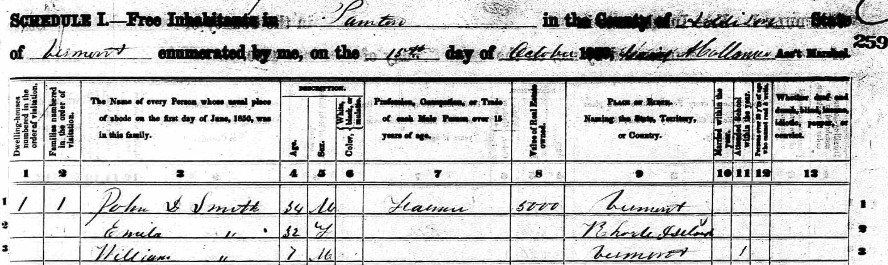
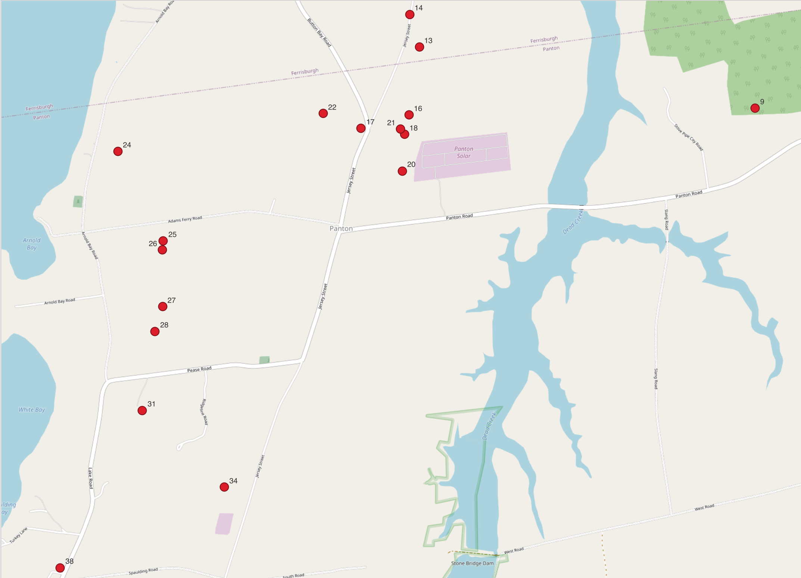
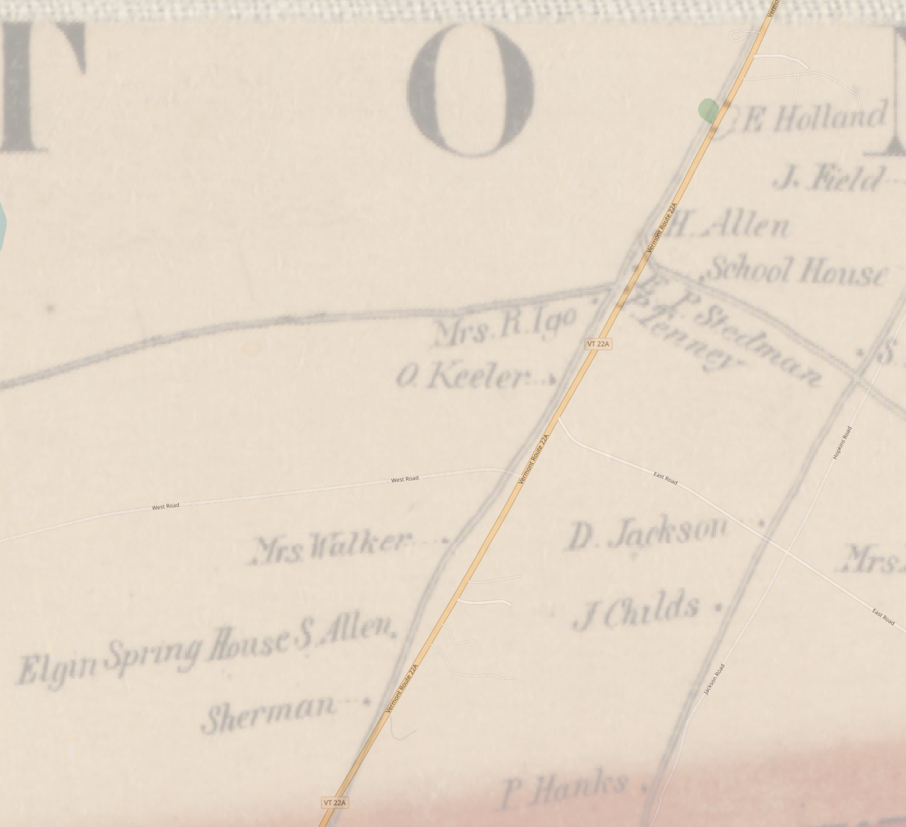
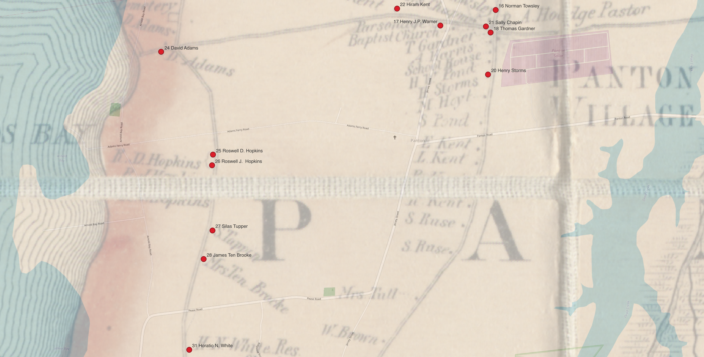
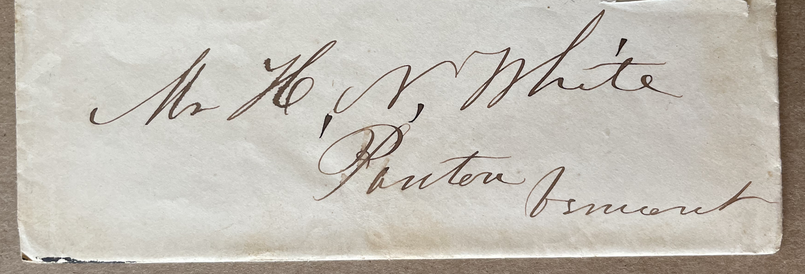
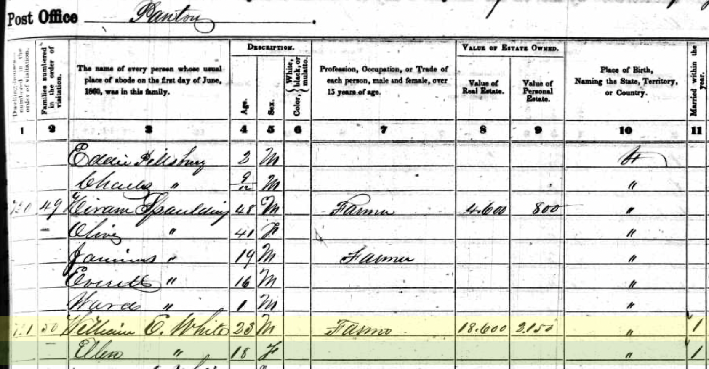
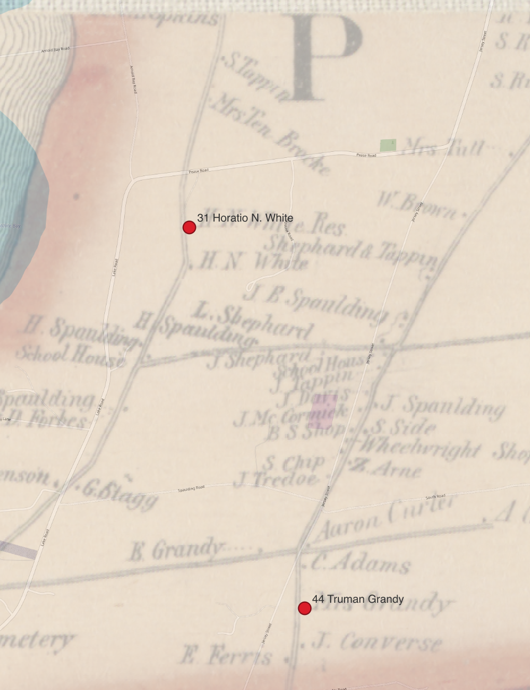

Finding census locations on maps
On a mid-October day in 1850, Gaius A. Collum, Assistant Marshall for the U.S. Census, made his way from Panton Village towards Lake Champlain, then headed south along a series of farms bordering the lake. He numbered each residence he visited on that day from 1 to 39 as he recorded their answers to the questions for the 1850 census. Collum followed a path that would be mapped in the mid-1850s by the entrepeneurial cartographer Henry Francis Walling as part of a larger commercial project to produce detailed cadastral maps covering the entire state of Vermont. I have been able to identify locations for about half of the houses where Collum stopped. We can situate these nineteenth-century locations with some confidence thanks to publicly available data sets from the U.S. National Archives1, and from digital archives of nineteenth-century maps.

Walling’s printed wall maps of Vermont counties were luxe products. His 1857 map of Addison County (where the census district of Panton is located) spanned more than four feet in each dimension, was printed on four sheets that were then mounted on linen backing, and cost $5 per copy, an exorbitant expenditure at the time. There are two printings of the map with slightly different bordering illustrations, both dated to 1857.2 Both the Library of Congress and the Boston Public Library have digitized copies of the second printing.3 For this post, I worked with a copy of the BPL’s digitization.4
I georeferenced the map to create a version I could work with using longitude-latitude coordinates.5 Walling’s map includes the surveyed boundary lines of each town in Addison county, most of which are unchanged today. Their clear corners and crossing points provide easy targets to align with modern GIS data from the state of Vermont’s Open Geodata Portal, and are ideally spread across the area of Addison county to yield reasonable results from georeferencing. One inescapabale limit to the accuracy that can be achieved, however, are gaps between the four original printed sheets. Unfortunately the village of Panton falls right on the crossing where all four sheets touch.

Nevertheless, the resulting alignment is very usable. In the illustration above, for example, we can see how closely a modern map of Vermont Route 22A aligns with the same road in the georeferenced version of Wallis’ map. We can also see the detailed plotting with labels of every major house and structure Wallis observed. It was appealing to potential buyers to see their own house on the map – and a gold mine for historians more than a century and a half later. With the georeferenced map in place, I followed Collum’s census listings, and matched names in the census record with labels on Walling’s map.
Reading the White letters
We can now trace Gaius Collum’s route on October 15, 1850, house by house. Here, points are labelled with the number Collum assigned to each house, and the name of the head of household in his census record.

The property at house 31 must have been pleasant: Collum recorded its value as $7,000, a figure exceeded by only 10 of the 56 properties listed with recorded values in the 1850 census for Panton. Collum identified the farmer who lived there as 47-year-old Horatio N. White. This corresponds perfectly with the location of two adjacent buildings that Walling labels “H.N. White Res” and “H.N. White.”
This is also the same Horatio Nelson White who kept a series of family letters that were passed along by five generations of his descendants until they were donated to the American Antiquarian Society (AAS) in 2024.6 In a town with a total population of 559 in the 1850 census, Walling’s “H.N. White” identifies him unambiguously, and “H.N. White, Panton, Vermont,” was in fact the normal address his family used in writing to him, as illustrated in this detail of a letter dated to March of 1857, at exactly the time Walling was surveying and publishing his map of Addison county.

Connecting information in documentary sources like census records with geographic information can illuminate many aspects of the White letters. For a very simple first example, I will mention the marriage of Horatio Nelson’s son, William E. White, to Ellen Grandey.7 The Vermont state archives records their marriage on November 19, 1859, and helpfully gives us the names of the bride’s parents, Truman and Polly Grandey.
The US Census of 1850 was the first to list individuals by name (rather than just counts of individuals in various categories), so we can follow changes in the makeup of households from decade to decade. In 1850, 14-year-old William White was living with his parents and five siblings. One Truman Grandy and his wife Polly have a daughter Ellen, then age 8. Ten years later, we find William and Ellen together, and a check in the final column illustrated here indicates “Married within the year”.

Like the Whites, the Grandys also lived in Panton: Horatio Nelson and his family were house 31 on Collum’s itinerary, the Grandys were house 44. Only when we find them both on H.F. Walling’s map is it obvious that Collum’s route from house 31 to house 44 twisted and turned through a cluster of residences at a small crossroads. Despite the large separation in numbering from 31 to 44, the Grandys and Whites were in fact separated only by the distance of a couple of farms. We’ll never know exactly how William and Ellen met, but we’re now free to imagine all the possibilities of two neighboring farming families in a small town in nineteenth-century Vermont.

Footnotes
The National Archives curates the original census sheets, and oversees a digitization program in collaboration with commercial partners. See the National Archives’ guide to working with census records online.↩︎
This post (attribued only to “admin”) from old-maps.com, provides helpful background on Walling’s mapping of Vermont: “Mapping Vermont in the 1850s”, February 19. 2014, https://www.old-maps.com/blog/mapping-vermont-in-the-1850s/, accessed March 20, 2025. A PDF on the same site has more detail including a discussion of the two printings of the Addison County map: Dave Allen, “Preliminary Notes on the Vermont County Maps”, Feb. 15 2006/May 2007, https://www.old-maps.com/vermont/00_VT_WALLMAPSoptimized.pdf, accessed March 20, 2025.↩︎
Digitizations of the second version of Walling’s map of Addison county:
↩︎Walling, Henry Francis. “Map of Addison County, Vermont.” Map. Boston: Baker & Tilden, 1857. Norman B. Leventhal Map & Education Center, https://collections.leventhalmap.org/search/commonwealth:wd376466z (accessed March 20, 2025).↩︎
I may add a DIY post later on how I did this, but you can download the resulting file in GeoTIFF format here if you want to use Walling’s map in a GIS now.↩︎
The collection of 38 letters is available for research use in the AAS in Worcester, identified as catalog record
617483. I’m tagging posts on this site that discuss the letters with the tagWhite letters.↩︎I’ll look at what we can learn from the full set of documents contextualizing their marriage in a later note.↩︎
Citation
@online{smith2025,
author = {Smith, Neel},
title = {Panton, {Vermont:} Background to Reading the {White} Letters},
date = {2025-03-20},
url = {https://neelsmith.quarto.pub/posts/2025-03-20-panton-vermont/},
langid = {en}
}